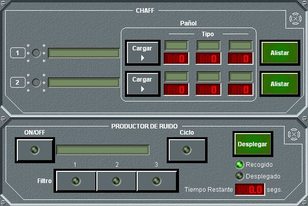

Chaff
El panel de detalle general de chaff presenta algunas diferencias dependiendo de que la unidad sea de superficie, submarina o aérea. A continuación se muestra cada uno de ellos.
Chaff en Unidades de Superficie

En este panel de detalle de chaff, que en el caso de unidades de superficie se muestra agrupado con el del productor de ruido, se muestran los dos lanzadores instalados en la unidad, los tres tipos de cartuchos disponibles en el pañol y las cantidades de cada uno de ellos.
Los indicadores tipo led que aparecen a la izquierda de cada lanzador indican el estado en el que está el mismo (verde indica disparando, amarillo indica vacío o en carga). Los leds miniatura que rodean el led principal tienen el mismo significado para cada uno de los 6 morteros de los que puede constar el lanzador.
Desde este panel pueden ejecutarse las siguientes acciones:
- Cargar los morteros con cartuchos del pañol: Cuando algún mortero no está lleno, puede cargarse según los patrones de carga definidos para dicho mortero. Para ello basta con pulsar el botón Cargar del lanzador. En el mismo botón y durante la carga se mostrará el tiempo que resta para que finalice el proceso.
- Lanzar Chaff: Pulsando en el botón Alistar se abre el panel de lanzamiento de chaff del lanzador correspondiente.
Chaff en Unidades Submarinas

En este panel de detalle de chaff, que en el caso de unidades submarinas se muestra agrupado con el de burbujas, se muestran el único lanzador que puede estar instalado en la unidad, los tres tipos de cartuchos disponibles en el pañol y las cantidades de cada uno de ellos. La funcionalidad de este panel es idéntica a la de unidades de superficie, salvo en que se aplica a un único lanzador.
Chaff en Unidades Aéreas
En este panel de detalle de chaff se muestran los dos lanzadores instalados en la unidad, la cantidad de cartuchos de cada salva y la cantidad que hay en el pañol.
Los indicadores tipo led que aparecen a la izquierda de cada lanzador indican el estado en el que está el mismo (verde indica disparando, amarillo indica vacío).
Desde este panel pueden ejecutarse las siguientes acciones:
- Lanzar Chaff: Pulsando en el botón Lanzar se lanza una salva por el lanzador correspondiente, decrementándose la munición en el pañol. Esta acción no se ejecuta si la altura de la unidad propia está fuera de los límites de altura de lanzamiento de Chaff.
Lanzamiento de Chaff en Unidades de Superficie y Submarinas/p>

En este panel de lanzamiento de chaff se muestra (arriba a la derecha) el nombre del lanzador. Desde él se pueden realizar las siguientes acciones:
- Seleccionar el modo de operación: Deslizando la barra de desplazamiento correspondiente se selecciona el modo de operación entre Manual, Semiautomático y Automático. Esta selección se hace efectiva al pulsar el botón Petición.
- Seleccionar el filtro ASMD para modos Semiautomático y Automático. Pulsando el botón ASMD, se abre una ventana que permite establecer los criterios de lanzamiento Semiautomático y Automático dependiendo de las condiciones del contacto. El led Alarma se enciende cuando se cumplen las condiciones del filtro y en la ventana se muestra alguno/s de los siguientes mensajes:
- Debe seleccionar Mortero
- Traza .... cumple filtro Chaff D/S/RF/IR
- Recomendación Rumbo: .....
- Recomendación Mortero: .....
- Consultar los cartuchos disponibles en Pañol. En el área denominada Patrón de Carga se muestran los cartuchos de cada tipo disponibles en el pañol.
- Consultar las submuniciones cargadas en cada mortero: En el área denominada Submuniciones Morteros se muestra, para cada mortero, el número de submuniciones de cada tipo que están cargadas en los tubos.
- Seleccionar el tipo de Chaff para lanzar. Utilizando la barra de desplazamiento a la derecha de los tipos de cartucho se selecciona el chaff a lanzar en el próximo lanzamiento, en los morteros que estén seleccionados y siempre que los tubos correspondientes tengan munición.
- Seleccionar los Morteros para lanzar. Al seleccionar un cartucho, se seleccionan automáticamente uno o varios morteros, de acuerdo con la configuración por defecto de lanzamiento chaff que se haya definido para la unidad. Esta configuración por defecto puede modificarse seleccionando o deseleccionando los morteros que se deseen pulsando los botones correspondientes a cada uno de ellos.
- Lanzar Chaff. Una vez seleccionado el tipo de chaff y los morteros, al pulsar el botón Lanzar se lanzará un cartucho del chaff seleccionado por cada uno de los tubos de los morteros seleccionados que carguen dicho chaff. Si el modo de disparo es semiautomático, este botón parpadeará cuando se recomiende el disparo. Si el modo es automático el botón pasa a color rojo durante toda la secuencia de disparo automática. En esta secuencia, el operador no interviene en el disparo y los cartuchos de chaff se disparan según se haya programado el secuenciador.
Filtro ASMD para Lanzamiento de Chaff en Unidades de Superficie y Submarinas
Dependiendo del grupo de chaff que tenga la unidad (ver Manual de Preparación – Contramedidas – Cartucho Chaff) se mostrará una de las siguientes ventanas:
En esta ventana se introducen los parámetros para lanzamiento Automático o Semiautomático de Chaff tipo D, S o IR. Estos parámetros son:
- Distancia < .... Distancia en millas entre el contacto y la unidad propia. Si se cumple que el contacto está a una distancia menor que esta y además se cumplen las otras tres condiciones del recuadro se activará el filtro ASMD.
- Velocidad > .... Velocidad en nudos del contacto. Si se cumple que el contacto tiene una velocidad superior a esta y además se cumplen las otras tres condiciones del recuadro se activará el filtro ASMD.
- CPA < .... CPA entre el contacto y la unidad propia. Si se cumple que el CPA entre el contacto y la unidad propia es menor que este y además se cumplen las otras tres condiciones del recuadro se activará el filtro ASMD.
- Altura < .... Altura en pies del contacto. Si se cumple que el contacto tiene una altura inferior a esta y además se cumplen las otras tres condiciones del recuadro se activará el filtro ASMD.
- TTF (Solo Chaff D, S o RF). Si el TTF del contacto es igual o superior a este, se activará el filtro ASMD, independientemente del resto de condiciones.
- ESM Spot (Solo Chaff D, S o RF). Si el Spot de la emisión ESM es igual al indicado, se activará el filtro ASMD, independientemente del resto de condiciones.
- Cualquier Lock-On (Solo Chaff S o RF): Si se activa esta condición, el filtro ASMD se activará siempre que el ESM detecte que algún radar está haciendo Lock-On sobre la unidad propia, independientemente del resto de condiciones.
La selección se hace efectiva al pulsar el botón Petición
Para no considerar los proyectiles lanzados por la propia unidad en los filtros ASMD, se comprueba si la amenaza se está acercando o alejando de la unidad. Para ello se examinará la dirección de avance de esa posible amenaza, es decir, una unidad sólo se tiene en cuenta como amenaza para el filtro ASMD si la demora del blanco menos su rumbo es inferior en valor absoluto a 90º.